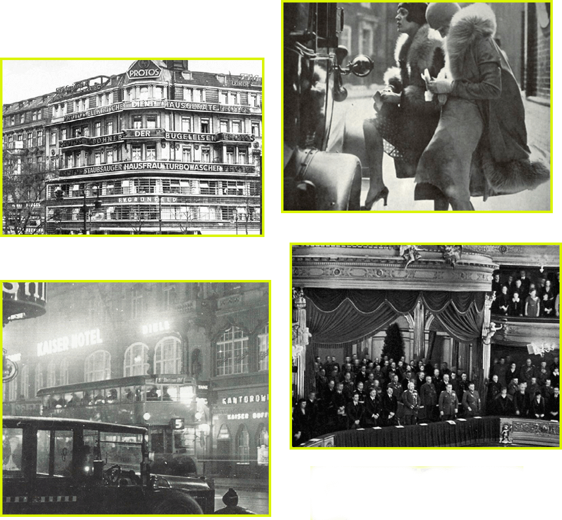
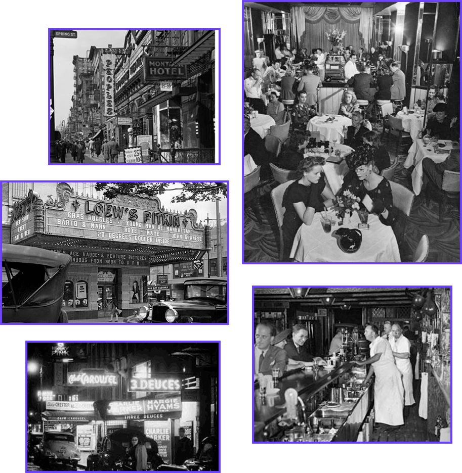

THE PERFORMANCE
BASED ON THE SHORT STORY "THE PERFORMANCE"
BY ARTHUR MILLER
THE PERFORMANCE
BASED ON THE SHORT STORY
"THE PERFORMANCE" BY ARTHUR MILLER
"THE PERFORMANCE" BY ARTHUR MILLER
THEY ADORE HIM,
SO LONG AS THEY
DON'T KNOW WHO HE IS...
SYNOPSIS
SYNOPSIS
Based on the short story by Arthur Miller, The Performance is set in 1937 as the Fascist atmosphere in Germany is nearing its brutal pinnacle.
Harold May is an American Jew and gifted tap dancer. Though he is nearly past his prime, he still longs for the success and status that have eluded him. While on tour in Europe, Harold, his old flame, Carol, and the rest of his troupe are scouted by Damian Fugler, a German attache. Not knowing the blond-haired May is a Jew; Fugler offers them a huge sum to perform one show in Berlin. Once in Germany, the troupe discovers that the show is an exclusive performance for Hitler himself.
As Fugler, Harold, and the troupe's lives become interwined, Harold is faced with a choice: either keep his Jewishness a secret for the sake of his dreams or, ironically, own up to who he really is in order to escape
Harold May is an American Jew and gifted tap dancer. Though he is nearly past his prime, he still longs for the success and status that have eluded him. While on tour in Europe, Harold, his old flame, Carol, and the rest of his troupe are scouted by Damian Fugler, a German attache. Not knowing the blond-haired May is a Jew; Fugler offers them a huge sum to perform one show in Berlin. Once in Germany, the troupe discovers that the show is an exclusive performance for Hitler himself.
As Fugler, Harold, and the troupe's lives become interwined, Harold is faced with a choice: either keep his Jewishness a secret for the sake of his dreams or, ironically, own up to who he really is in order to escape
DIRECTOR'S
STATEMENT
This is no stodgy period piece. While it will remain strongly grounded in Late 30's period reality, there is a contemporary energy and ever-so slightly heightened style to our storytelling
Dreams and dance numbers will come to life, but war looms, lending a sharp tension to Harold's predicament as a Jew as well as Fugler's predicament as executor to Hitler's wishes
Dreams and dance numbers will come to life, but war looms, lending a sharp tension to Harold's predicament as a Jew as well as Fugler's predicament as executor to Hitler's wishes
| KENNETH BRANAGH | VINCENT CASSEL | LUKE EVANS | EMMY ROSSUM | DIANE KRUGER |
| JUSTIN TIMBERLAKE | RAMI MALEK | SAM ROCKWELL | JARED GRIMES |
| OSCAR ISSAC | MICHAEL SHEEN | MATTHEW MCFADYN |
| KENNETH BRANAGH | VINCENT CASSEL | LUKE EVANS |
| EMMY ROSSUM | DIANE KRUGER | JUSTIN TIMBERLAKE |
| RAMI MALEK | SAM ROCKWELL | JARED GRIMES |
| OSCAR ISSAC | MICHAEL SHEEN | MATTHEW MCFADYN |
POTENTIAL
CAST
LOCATIONS


NEW YORK
/
BERLIN
ARTHUR MILLER
(October 17, 1915 - February 10, 2005) was an American playwright and essayist in the 20th-century American theater. Among his most popular plays are All My Sons (1947), Death of a Salesman (1949), The Crucible (1953), and A View from the Bridge (1955, revised 1956). He wrote several screenplays and was most noted for his work on The Misfits (1961). The drama Death of a Salesman has been numbered on the short list of finest American plays in the 20th century.
Miller was often in the public eye, particularly during the late 1940s, 1950s and early 1960s. During this time, he was awarded a Pulitzer Prize for Drama, testified before the House Un-American Activities Committee, and married Marilyn Monroe.
In 1980, Miller received the St. Louis Literary Award from the Saint Louis University Library Associates. He received the Prince of Asturias Award, the Praemium Imperiale prize in 2002 and the Jerusalem Prize in 2003, as well as the Dorothy and Lillian Gish Prize in 1999.
Miller was often in the public eye, particularly during the late 1940s, 1950s and early 1960s. During this time, he was awarded a Pulitzer Prize for Drama, testified before the House Un-American Activities Committee, and married Marilyn Monroe.
In 1980, Miller received the St. Louis Literary Award from the Saint Louis University Library Associates. He received the Prince of Asturias Award, the Praemium Imperiale prize in 2002 and the Jerusalem Prize in 2003, as well as the Dorothy and Lillian Gish Prize in 1999.
JEREMY PIVEN
LEAD ACTOR / PRODUCER
An American actor, comedian, and producer. Jeremy has won a Golden Globe and three consecutive Emmy's for his role as Ari Gold in the comedy series Entourage.
Jeremy starred as Harry Selfridge in the British period drama Mr. Selfridge; as well as over 50 other feature films and shows including Blackhawk Down, Spy Kids 4, Grosse Pointe Blank, Family Man, Heat, Smokin' Aces, Old School and Sin City: A Dame to kill for.
Jeremy starred as Harry Selfridge in the British period drama Mr. Selfridge; as well as over 50 other feature films and shows including Blackhawk Down, Spy Kids 4, Grosse Pointe Blank, Family Man, Heat, Smokin' Aces, Old School and Sin City: A Dame to kill for.
SHIRA PIVEN
WRITER / DIRECTOR
An American film and theatre director and writer, Piven co-wrote and directed her first feature film, Fully Loaded in 2011, an adaptation of the stage play she directed, about two single mothers on a wild and fraught night out in Los Angeles. Her second feature, Welcome to Me, was co-produced by Adam McKay, financed by Bron Studios and stars Kristen Wiig as a woman with borderline personality disorder who wins the lottery and launches a tv show all about herself. WTM was named a top 10 indie of 2015 by The National Board of Review and was a New York Times critic's pick. Piven has also directed television episodes of Amazon's Transparent and One Mississippi, HBO's Divorce as well as episodes of television shows Claws, and Sweetbitter.
Piven directed more than 20 plays in New York, Chicago, Los Angeles, and D.C., often creating her own adaptations of literature for the stage. Most recently she directed fonesco's Victims of Duty at A Red Orchid Theatre in Chicago, starring actor Michael Shannon, (99 Homes, Take Shelter) a revival of her 1995 production starring Shannon, and Amy handecker (Transparent.) In 1999, she founded Water Theater Com- pany in New York, and fed the groundbreaking physical improv theater group Burn Manhattan. She also spent over 10 years teaching with the Actor's Gang theatre's Prison Project teaching ensemble theatre and spontaneous writing to men and women in prison in California.
Piven directed more than 20 plays in New York, Chicago, Los Angeles, and D.C., often creating her own adaptations of literature for the stage. Most recently she directed fonesco's Victims of Duty at A Red Orchid Theatre in Chicago, starring actor Michael Shannon, (99 Homes, Take Shelter) a revival of her 1995 production starring Shannon, and Amy handecker (Transparent.) In 1999, she founded Water Theater Com- pany in New York, and fed the groundbreaking physical improv theater group Burn Manhattan. She also spent over 10 years teaching with the Actor's Gang theatre's Prison Project teaching ensemble theatre and spontaneous writing to men and women in prison in California.
DANIEL FINKELMAN
PRODUCER
Daniel is a prolific director and producer. He is the founder of SparksNext, a boutique production house based in New York. Sparks Next has produced over 100 features, shorts, Music Videos, documentaries, and commercials.
Daniel has received industry wide recognition in the "Best First Film" category at the Independent Spirit Awards for "Menashe", which premieried at the Sundance and Berlinale firm festivals and is streaming on Netflix.
Daniel's latest feature project "The Vigil", premiered at the Toronto Film Festival in mid-2019, and is due for theatrical release on February '21 by IFC.
Daniel has received industry wide recognition in the "Best First Film" category at the Independent Spirit Awards for "Menashe", which premieried at the Sundance and Berlinale firm festivals and is streaming on Netflix.
Daniel's latest feature project "The Vigil", premiered at the Toronto Film Festival in mid-2019, and is due for theatrical release on February '21 by IFC.
DAVID RUBIN
EXECUTIVE PRODUCER
David Rubin's career started over 20 years ago on Wall St. His focus and experience are capital formation, corporate finance? and the capital markets.
Today he has a portfolio of companies across multiple sectors. Lending, payments, technology, and healthcare. His main holding company eProdigy is located across the street from the NYSE encompassing the entire floor 18sq footpring.
Throughout his companies he employs hundreds of people inclusing cpa's, attorney's, scientists, developers, and programmers.
He's a serial enterpreneur who is passionate about community and giving back. He also assists in managing his wife's law firm that mainly focuses on defaulted merchants from his porfolio company. Lives in Brooklyn with his wife, two kids and Doberman.
Today he has a portfolio of companies across multiple sectors. Lending, payments, technology, and healthcare. His main holding company eProdigy is located across the street from the NYSE encompassing the entire floor 18sq footpring.
Throughout his companies he employs hundreds of people inclusing cpa's, attorney's, scientists, developers, and programmers.
He's a serial enterpreneur who is passionate about community and giving back. He also assists in managing his wife's law firm that mainly focuses on defaulted merchants from his porfolio company. Lives in Brooklyn with his wife, two kids and Doberman.
CHAYA GREENBERG
CO PRODUCER
Chaya is a content creator and producer with Sparks Next. Chaya created and produced numerous award-winning music videos, documentaries, and short films.
She has also produced a range of commercials for corporate clients. Chaya was associate producer for the critically acclaimed film "The Vigil" which premiered at TIFF (2019)
She has also produced a range of commercials for corporate clients. Chaya was associate producer for the critically acclaimed film "The Vigil" which premiered at TIFF (2019)
TEAM
NANCY BISHOP
CASTING DIRECTOR
NANCY BISHOP
CASTING DIRECTOR
An Emmy-nominated casting director, who works internationally from offices in London and Prague. She is a founding member and former President of the Board of Directors of CSA's European branch.
With over 100 major feature film and television projects among her credits, Nancy has cast hundreds of actors throughout Europe, the United Kingdom and the U.S. Nancy has been retained as casting director by dozens of major screen producers and directors, including Borat 2, Brad Bird, (Mission Impossible !V), Bong Joon Ho(Snowpiercer), and Matthew Weiner (The Romanoffs). She also was nominated for an Emmy Award for her casting work on Anne Frank: The Whole Story, ABC/Disney Studios
With over 100 major feature film and television projects among her credits, Nancy has cast hundreds of actors throughout Europe, the United Kingdom and the U.S. Nancy has been retained as casting director by dozens of major screen producers and directors, including Borat 2, Brad Bird, (Mission Impossible !V), Bong Joon Ho(Snowpiercer), and Matthew Weiner (The Romanoffs). She also was nominated for an Emmy Award for her casting work on Anne Frank: The Whole Story, ABC/Disney Studios
ANDREI BONCEA
LINE PRODUCER
ANDREI BONCEA
LINE PRODUCER
a Romanian film producer, and since 1998 General Director of MediaPro Pictures, one of the leading film and television studios in Eastern Europe.
He has been involved in numerous international productions filmed in Romania, such as Amen, directed by Costa Gavras, Callas Forever, directed by Franco Zeffirelli, Modigliani, directed by Mick Davis, starring Andy Garcia, and 2006 Academy Award nominee for Foreign Film Merry Christmas, directed by Christian Carion. He has also produced Romanian films such as Furia, directed by Radu Muntean, and California Dreamin, directed by Cristian Nemescu, and television series for Romanian TV channels PRO TV and Acasa TV.
Boncea has been married since 1998 to Romanian pop singer Loredana Groza, and he has a daughter, Elena, born in 1998.
He has been involved in numerous international productions filmed in Romania, such as Amen, directed by Costa Gavras, Callas Forever, directed by Franco Zeffirelli, Modigliani, directed by Mick Davis, starring Andy Garcia, and 2006 Academy Award nominee for Foreign Film Merry Christmas, directed by Christian Carion. He has also produced Romanian films such as Furia, directed by Radu Muntean, and California Dreamin, directed by Cristian Nemescu, and television series for Romanian TV channels PRO TV and Acasa TV.
Boncea has been married since 1998 to Romanian pop singer Loredana Groza, and he has a daughter, Elena, born in 1998.
TEAM
JIM PESOLI
LEGAL COUNSEL, ADVISOR
JIM PESOLI
LEGAL COUNSEL, ADVISOR
Jim Pesoli is an entrepreneur, entertainment attorney and executive producer with over fifteen years of production experience spanning live events, concerts, film and television. Mr. Pesoli has represented and worked alongside production companies and financiers on projects with budgets ranging up to $50 million. Pesoli is actively involved in the creative development, marketing strategies and business affairs of each project, and brings a diverse, yet meaningful series of skills and experiences to each venture.
Mr. Pesoli has been an integral contributor to the finance plans of each production, along with aggregating and closing capital sources. Mr. Pesoli has developed relationships with talent agencies, management companies, producers, foreign sales agents, bond distributors and others throughout the industry.
Mr. Pesoli has worked on projects, which have featured A-list stars such as Johnny Depp, Anne Hathaway, Matthew McConaughey, Jason Clarke, Diane Lane, Gary Oldman, Shia LaBeouf, Kate Mara and others.
In addition to entertainment, Mr. Pesoli has represented clients from around the globe on legal matters pertaining to mergers and acquisitions, real estate, commodities, technology and finance.
Mr. Pesoli has been an integral contributor to the finance plans of each production, along with aggregating and closing capital sources. Mr. Pesoli has developed relationships with talent agencies, management companies, producers, foreign sales agents, bond distributors and others throughout the industry.
Mr. Pesoli has worked on projects, which have featured A-list stars such as Johnny Depp, Anne Hathaway, Matthew McConaughey, Jason Clarke, Diane Lane, Gary Oldman, Shia LaBeouf, Kate Mara and others.
In addition to entertainment, Mr. Pesoli has represented clients from around the globe on legal matters pertaining to mergers and acquisitions, real estate, commodities, technology and finance.
POTENTIAL TEAM
ERIK MESSERSCHMIDT
CINEMATOGRAPHER
ERIK MESSERSCHMIDT
CINEMATOGRAPHER
An American cinematographer. He is best known for his collaborations with director David Fincher on the films Mank (as director of photography) and Gone Girl (as gaffer), and on the Netflix series Mindhunter.
He has also shot episodes of the TV series Legion, Raised by Wolves, and Fargo.
He has also shot episodes of the TV series Legion, Raised by Wolves, and Fargo.
SUSAN MATHESON
COSTUME DESIGNER
SUSAN MATHESON
COSTUME DESIGNER
Susan received her bachelor's degree from Vassar College and her BFA from Parsons School of Design where she received the "Designer of the year" award. Since then she has gone on to design costumes for both film and theater.
Susan has collaborated with performance artists Ron Athey, Juliana Snapper and Nicole Blackman and designed costumes for the films The Kingdom, Friday Night Lights, Blue Crush, Crazy/Beautiful, Honey, Panic and Best Laid Plans.
She has designed three movies starring Will Ferrell - Step Brothers, Semi- Pro, and Talladega Nights: The Ballad of Ricky Bobby. She designed the film Couples Retreat starring Vince Vaughn and Jon Favreau which premiered in the fall of 2009.
Susan has collaborated with performance artists Ron Athey, Juliana Snapper and Nicole Blackman and designed costumes for the films The Kingdom, Friday Night Lights, Blue Crush, Crazy/Beautiful, Honey, Panic and Best Laid Plans.
She has designed three movies starring Will Ferrell - Step Brothers, Semi- Pro, and Talladega Nights: The Ballad of Ricky Bobby. She designed the film Couples Retreat starring Vince Vaughn and Jon Favreau which premiered in the fall of 2009.
INSPIRATION
/
TONE
AUDIENCE APPEAL
Churchill famously said that "Those who fail to learn from history are doomed to repeat it." Set in late 1930's, Berlin, The Performance is a story of inner conflict in the face of systemic oppression backdropped by a society that ominously mirrors our own. Harold May considers himself an American above all. How fascinating it is that the place he finally he is finally forced to embrace his Jewish identity is in Nazi Germany.
Who better to give voice to The Performance than Director and Writer, Shira Piven. Shira is politically active and her work is driven by her desire for social justice and equity. She has brought her theatre work into prisons, working with people of all races who put aside skin color and ethnic affiliation through the communal practice of ensemble theatre. She has also worked in a male dorninated industry creating a brilliant career spanning decades. Shira's life experience gives her a unique authentic perspective which comes through in her writing and directing...
The Performance explores many conflicts that are as relevant and captivating today as they were nearly a century ago. What to do in the face of systemic oppression, abuse, and injustice? How to stay sane when society has gone mad with its leaders appealing to what is most primitive in our nature. Chauvinism, racism, anti-Semitism, sexism, xenophobia, bigotry and prejudice, ought to be universally condemned. Yet, what does the world look like when they are encouraged and celebrated.
On the individual level, characters struggle with conflicts that are almost indistinguishable from those of today; how can one love someone of the sare gender when the price is total rejection or even worse... what to do when the price of your drearns is to hide who you are and betray your reality.
We are looking to hire a diverse cast and crew that embody the struggles portrayed by so many of the characters. People who have grappled with struggles of faith, race, poverty, sexuality to lend the subtle touch of authenticity to every aspect of production. The story, the people, and the message of the Performance make it a film apart, and most relevant and appealing in these troubling times.
Who better to give voice to The Performance than Director and Writer, Shira Piven. Shira is politically active and her work is driven by her desire for social justice and equity. She has brought her theatre work into prisons, working with people of all races who put aside skin color and ethnic affiliation through the communal practice of ensemble theatre. She has also worked in a male dorninated industry creating a brilliant career spanning decades. Shira's life experience gives her a unique authentic perspective which comes through in her writing and directing...
The Performance explores many conflicts that are as relevant and captivating today as they were nearly a century ago. What to do in the face of systemic oppression, abuse, and injustice? How to stay sane when society has gone mad with its leaders appealing to what is most primitive in our nature. Chauvinism, racism, anti-Semitism, sexism, xenophobia, bigotry and prejudice, ought to be universally condemned. Yet, what does the world look like when they are encouraged and celebrated.
On the individual level, characters struggle with conflicts that are almost indistinguishable from those of today; how can one love someone of the sare gender when the price is total rejection or even worse... what to do when the price of your drearns is to hide who you are and betray your reality.
We are looking to hire a diverse cast and crew that embody the struggles portrayed by so many of the characters. People who have grappled with struggles of faith, race, poverty, sexuality to lend the subtle touch of authenticity to every aspect of production. The story, the people, and the message of the Performance make it a film apart, and most relevant and appealing in these troubling times.
COVID 19: THE RISE OF STREAMING & DEMAND FOR CONTENT
Two key factors have converged to make the present opportunity unequally marketable.
Streaming networks have been growing rapidly in recent years but the global pandemic has accelerated their growth to the point where the entire industry has been significantly altered. With movie theaters closed or operating at a reduced capacity, videos on demand and streaming platform subscriptions have grown exponentially. For example, Netflix alone has allocated some $20 Billion for new content for 2021 for their 190 Million new users.
The pandemic caused the temporary closures of the major production studios, resulting ina drastic reduction and major delays in the supply of content.
On balance, the increase in streaming demand, combined with the shortage in the supply of content presents investors with perhaps the greatest opportunity in the history of cinema. These two factors make a film with a message as timely, relatable, and entertaining as The Performance, truly unique.
Streaming networks have been growing rapidly in recent years but the global pandemic has accelerated their growth to the point where the entire industry has been significantly altered. With movie theaters closed or operating at a reduced capacity, videos on demand and streaming platform subscriptions have grown exponentially. For example, Netflix alone has allocated some $20 Billion for new content for 2021 for their 190 Million new users.
The pandemic caused the temporary closures of the major production studios, resulting ina drastic reduction and major delays in the supply of content.
On balance, the increase in streaming demand, combined with the shortage in the supply of content presents investors with perhaps the greatest opportunity in the history of cinema. These two factors make a film with a message as timely, relatable, and entertaining as The Performance, truly unique.
•
SIMILAR PROJECTS
•
THE ARTIST:
- Won 5 Oscar Awards
- Another 156 wins & 204 nominations
Budget - $15,000,00
Gross (US & Canada) $45,000,000
Gross (US & Canada) $45,000,000
Gross (World) - $133,000,000
THE PIANIST:
- Won 3 Oscar Awards
- Another 54 wins & 74 nominations
Budget - $35,000,00
Gross (US & Canada) $32,572,577
Gross (US & Canada) $32,572,577
Gross (World) - $120,072,577
THE GRAND BUDAPEST HOTEL:
- Won 4 Oscar Awards
- Another 130 wins & 226 nominations
Budget - $25,000,000
Gross (US & Canada) $59,301,324
Gross (US & Canada) $59,301,324
Gross (World) - $172,940,180
THE GENTLEMEN:
Budget - $22,000,000
Gross (US & Canada) $36,471,795
Gross (US & Canada) $36,471,795
Gross (World) - $115,171,795
JUNO:
- Won 1 Oscar Award
- Another 89 wins & 98 nominations
Budget - $7,500,000
Gross (US & Canada) $36,471,795
Gross (US & Canada) $36,471,795
Gross (World) - $115,171,795